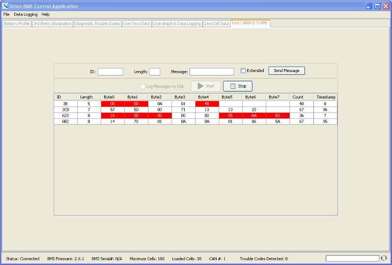

This screen provides access to live CANBUS traffic on the CANBUS network. It also allows for messages to be manually transmitted through the CANdapter onto the network. This screen requires a CANdapter to utilize.
CANBUS traffic can be logged to disk by using the "Log Messages to Disk' option. If this is selected, the utility will prompt the user for a destination folder for the logfile when the "Start' button is pressed. The log will be saved in the destination folder as a zipped archive.
Note: A red background on a cell indicates that particular cell contents have changed since the live CANBUS viewing was started.
| < Open Cell Voltages Button | Histogram And Events > |